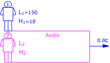
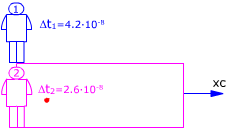
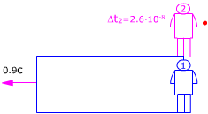
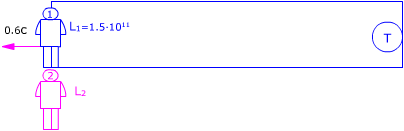
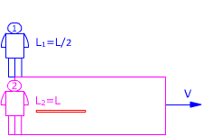
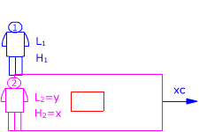
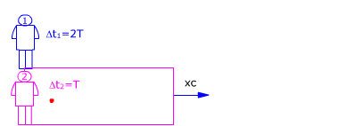
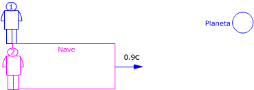
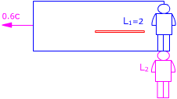

Longitud y tiempo
1a)
Un avión cuyas dimensiones propias son 340 m (Largo) y 21
m (Alto) vuela con velocidad 0.6c ¿Qué dimensiones tendrá
visto desde el suelo?
b) Las
dimensiones de otro avión visto desde el suelo son: 150 m (Largo)
y 18 m (Alto). Si vuela con velocidad 0.8c ¿cuáles son sus
dimensiones propias?
Solución

Observador 1 (Suelo):
Ve al avión moviéndose con velocidad 0.6c. Midiendo sus
dimensiones obtiene: L1, H1
Observador 2 (Avión)
Ve el avión quieto. Midiendo sus dimensiones obtiene: L2 = 340
m, H2 = 21 m.
Estas dimensiones son propias
Aplicando la conversión de longitudes resulta:
$$\begin{aligned} &L_1=\gamma\,L_2\quad,\quad H_1=H_2\\[6pt] &\gamma=\sqrt{1-\left(\frac{v}{c}\right)^{2}}=\sqrt{1-\left(\frac{0{,}6\,c}{c}\right)^{2}}=0{,}8\\[6pt] &L_1=340\ \mathrm{m}\cdot0{,}8=272\ \mathrm{m}\\[6pt] &H_1=21\ \mathrm{m} \end{aligned}$$
El observador 1 ve el avión más corto de lo que lo ve el observador 2 y con la misma altura

Observador 1 (Suelo):
Ve al avión moviéndose con velocidad 0.8c. Midiendo sus
dimensiones obtiene: L1=150, H1=18
Observador 2 (Avión)
Ve el avión quieto. Midiendo sus dimensiones obtiene: L2,
H2
Estas dimensiones son propias
Aplicando la conversión de longitudes resulta:
$$\begin{aligned} &L_1=\gamma\,L_2\;\rightarrow\;L_2=\frac{L_1}{\gamma}\quad,\quad H_2=H_1\\[6pt] &\gamma=\sqrt{1-\left(\frac{v}{c}\right)^{2}}=\sqrt{1-\left(\frac{0{,}8\,c}{c}\right)^{2}}=0{,}6\\[6pt] &L_2=\frac{150\ \mathrm{m}}{0{,}6}=250\ \mathrm{m}\\[6pt] &H_2=18\ \mathrm{m} \end{aligned}$$
El observador 2 ve su avión más largo de lo que lo ve el observador 1 y con la misma altura
2Se determina, por métodos ópticos, la longitud de una nave espacial que pasa por las proximidades de la Tierra, resultando ser 100 m. En contacto radiofónico los astronautas que viajan en la nave co-munican que la longitud de su nave es de 120 m ¿A qué velocidad viaja la nave respecto a la Tierra?
Solución

Observador 1 (Tierra):
Ve la nave moviéndose con velocidad x·c. Midiendo su longitud
obtiene L1 = 100 m
Observador 2 (Nave)
Ve la nave quieta. Midiendo su longitud obtiene: L2 = 120
m
Esta longitud es propia
Aplicando la conversión de longitudes resulta:
$$L_1=\gamma\,L_2\;\rightarrow\;\gamma=\frac{L_1}{L_2}=\frac{100\ \mathrm{m}}{120\ \mathrm{m}}=\frac{5}{6}$$
Conociendo γ se puede calcular la velocidad de la nave. Este cálculo resultará más fácil si expresamos la velocidad como un porcentaje de la velocidad de la luz: v = x·c
$$\begin{aligned} &\gamma=\sqrt{1-\left(\frac{x\,c}{c}\right)^{2}}=\sqrt{1-x^{2}}\\[6pt] &\gamma^{2}=1-x^{2}\;\rightarrow\;x=\sqrt{1-\gamma^{2}}\\[6pt] &x=\sqrt{1-\left(\frac{5}{6}\right)^{2}}=0{,}553 \end{aligned}$$
La velocidad de la nave espacial es un 55.3% de la velocidad de la luz.
$$v=x\,c=0{,}553\cdot3\cdot10^{8}\ \mathrm{\frac{m}{s}}=1{,}66\cdot10^{8}\ \mathrm{\frac{m}{s}}$$
3La longitud propia de cada uno de los lados de un cuadrado es a. Hallar el perímetro de este cuadrado en un sistema de referencia, que se mueve a velocidad constante u en la dirección paralela a la base. Estudiar los casos cuando u << c y cuando u tiende a c
Solución
El rectángulo representa un recinto que se mueve
respecto al observador 1 con velocidad u
El observador 2 y el cuadrado están dentro del recinto

Observador 1:
Ve el cuadrado moviéndose con velocidad u. Midiendo sus dimensiones
obtiene: L1, H1
Observador 2:
Ve el cuadrado quieto. Midiendo sus dimensiones obtiene: L2 = a,
H2 = a
Estas dimensiones son propias
Aplicando la conversión de longitudes resulta:
$$\begin{aligned} &L_1=\gamma\,L_2=\gamma\,a\quad,\quad H_1=H_2=a\\[6pt] &\gamma=\sqrt{1-\left(\frac{u}{c}\right)^{2}} \end{aligned}$$
El perimetro del cuadrado visto por el observador 1 será:
$$P_1=2\,(L_1+H_1)=2\,(\gamma\,a+a)=2\,a\,(\gamma+1)$$
|
$$\begin{aligned} &\gamma=\sqrt{1-\left(\frac{u}{c}\right)^{2}}\approx1\\[6pt] &P_1=2\,a\,(\gamma+1)=4\,a \end{aligned}$$ |
4Un avión vuela con
una velocidad igual al 90% de la de la luz.
a)
El piloto nota que su corazón late una vez por segundo. Calcula
el intervalo entre latidos que observará el controlador del aeropuerto
b) El
controlador nota que su corazón late cada 1 s ¿que intervalo
entre latidos observará el piloto?
Solución

Observador 1 (Controlador):
Ve el corazón moviéndose con velocidad 0.9c. Midiendo la
duración del latido obtiene:Δt1
La posición del corazón al empezar y acabar el latido no
es la misma
Observador 2 (Piloto)
Ve su corazón quieto. Midiendo la duración del latido obtiene:Δt2
= 1 s
Este tiempo es propio
Aplicando la conversión de tiempos resulta:
$$\begin{aligned} &\Delta t_1=\frac{\Delta t_2}{\gamma}\\[6pt] &\gamma=\sqrt{1-\left(\frac{v}{c}\right)^{2}}=\sqrt{1-\left(\frac{0{,}9\,c}{c}\right)^{2}}=\sqrt{0{,}19}\\[6pt] &\Delta t_1=\frac{1\ \mathrm{s}}{\sqrt{0{,}19}}=2{,}29\ \mathrm{s} \end{aligned}$$
Para el controlador el latido del corazon del piloto dura más de lo que dura para este último. O sea: en el avión el tiempo transcurre más despacio que en tierra
El rectángulo representa un recinto que se mueve respecto al observador 2 (Piloto) con velocidad 0.9c. El observador 1 (Controlador) y su corazón están dentro del recinto

Observador 1 (Controlador):
Ve su corazón quieto. Midiendo la duración del latido obtiene:Δt1
= 1 s
Este tiempo es propio
Observador 2 (Piloto)
Ve el corazón del controlador moviéndose con velocidad 0.9c.
Midiendo la duración del latido obtiene:Δt2. La
posición del corazón al empezar y acabar el latido no es
la misma
Aplicando la conversión de tiempos resulta:
$$\begin{aligned} &\Delta t_2=\frac{\Delta t_1}{\gamma}\\[6pt] &\gamma=\sqrt{1-\left(\frac{v}{c}\right)^{2}}=\sqrt{1-\left(\frac{0{,}9\,c}{c}\right)^{2}}=\sqrt{0{,}19}\\[6pt] &\Delta t_2=\frac{1}{\sqrt{0{,}19}}=2{,}29\ \mathrm{s} \end{aligned}$$
Para el piloto el latido del corazon del controlador dura más de lo que dura para este último. O sea: en el avión el tiempo transcurre más despacio que en tierra
Oigo tus quejas: en el apartado anterior habíamos obtenido que el tiempo va más despacio en el avión y ahora resulta que el tiempo va más lento en tierra ¿en qué quedamos?
El tiempo va más lento en todo
sistema que se mueva con respecto al observador.
Visto desde tierra el avión se mueve, pues un mismo lapso de tiempo
será mayor en tierra que en el avión. Vista desde el avión
es la tierra quién se mueve pues entonces un mismo lapso de tiempo
será mayor en el avión que en tierra.
5Un pasajero de un vehículo espacial tarda 10 minutos en tomarse un café, medidos en el sistema de referencia de la nave S'. La nave se mueve con velocidad v respecto a un observador inercial S para el cual el pasajero tardó en tomarse el café un cuarto de hora. Determina la velocidad v
Solución

Observador 1 (S):
Ve la taza moviéndose con velocidad v. Midiendo el tiempo que tarda
en vaciarse obtiene
Δt1= 15 min. La posición de la taza al empezar
a beber y al acabar no es la misma
Observador 2 (S')
Ve la taza quieta. Midiendo el tiempo que tarda en vaciarse obtiene Δt2
= 10 min
Este tiempo es propio
Aplicando la conversión de tiempos resulta:
$$\Delta t_1=\frac{\Delta t_2}{\gamma}\;\rightarrow\;\gamma=\frac{\Delta t_2}{\Delta t_1}=\frac{10\ \mathrm{min}}{15\ \mathrm{min}}=\frac{2}{3}$$
Conociendo γ se puede calcular la velocidad de la nave. Este cálculo resultará más fácil si expresamos la velocidad como un porcentaje de la velocidad de la luz: v =x·c
$$\begin{aligned} &\gamma=\sqrt{1-\left(\frac{x\,c}{c}\right)^{2}}=\sqrt{1-x^{2}}\\[6pt] &\gamma^{2}=1-x^{2}\;\rightarrow\;x=\sqrt{1-\gamma^{2}}\\[6pt] &x=\sqrt{1-\left(\frac{2}{3}\right)^{2}}=0{,}745 \end{aligned}$$
La velocidad de la nave espacial es un 74.5% de la velocidad de la luz.
$$v=x\,c=0{,}745\cdot3\cdot10^{8}\ \mathrm{\frac{m}{s}}=2{,}24\cdot10^{8}\ \mathrm{\frac{m}{s}}$$
6Obtener la vida media, medida en el laboratorio, de un muón que se mueve a 0.6c respecto al laboratorio, si su vida media en reposo es de 2·10-6 s
Solución
El rectángulo representa un recinto que se mueve
respecto al observador 1 con velocidad 0.6c
El observador 2 y el muón están dentro del recinto

Observador 1 (Laboratorio):
Ve el muón moviéndose con velocidad 0.6c. Midiendo la duración
de su vida obtiene: Δt1
La posición del muón al nacer y al morir no es la misma
Observador 2 (Recinto)
Ve el muón quieto. Midiendo la duración de su vida obtiene:
Δt2 = 2·10-6 s
Este tiempo es propio
Aplicando la conversión de tiempos resulta:
$$\begin{aligned} &\Delta t_1=\frac{\Delta t_2}{\gamma}\\[6pt] &\gamma=\sqrt{1-\left(\frac{v}{c}\right)^{2}}=\sqrt{1-\left(\frac{0{,}6\,c}{c}\right)^{2}}=0{,}8\\[6pt] &\Delta t_1=\frac{2\cdot10^{-6}\ \mathrm{s}}{0{,}8}=2{,}5\cdot10^{-6}\ \mathrm{s} \end{aligned}$$
Visto desde el laboratorio el muón vive un 25% más de tiempo (Precisamente por eso se le detecta)
7La vida media de los piones en reposo es 2.6·10-8 s ¿a qué velocidad deberán viajar los piones para que su vida media medida en el laboratorio sea de 4.2·10-8 s?
Solución
El rectángulo representa un recinto que se mueve
respecto al observador 1 con velocidad x·c
El observador 2 y el pión están dentro del recinto

Observador 1 (Laboratorio):
Ve el pión moviéndose con velocidad x·c. Midiendo
la duración de su vida obtiene:Δt1 = 4.2·10-8
s
La posición del pión al nacer y al morir no es la misma
Observador 2 (Recinto)
Ve el pión quieto. Midiendo la duración de su vida obtiene:Δt2
= 2.6·10-8 s
Este tiempo es propio
Aplicando la conversión de tiempos resulta:
$$\Delta t_1=\frac{\Delta t_2}{\gamma}\;\rightarrow\;\gamma=\frac{\Delta t_2}{\Delta t_1}=\frac{2{,}6\cdot10^{-8}\ \mathrm{s}}{4{,}2\cdot10^{-8}\ \mathrm{s}}=0{,}619$$
$$\begin{aligned} &\gamma=\sqrt{1-\left(\frac{x\,c}{c}\right)^{2}}=\sqrt{1-x^{2}}\\[6pt] &\gamma^{2}=1-x^{2}\;\rightarrow\;x=\sqrt{1-\gamma^{2}}\\[6pt] &x=\sqrt{1-(0{,}619)^{2}}=0{,}785 \end{aligned}$$
$$v=x\,c=0{,}785\cdot3\cdot10^{8}\ \mathrm{\frac{m}{s}}=2{,}36\cdot10^{8}\ \mathrm{\frac{m}{s}}$$
8El período de un péndulo,
medido dentro de un tren que viaja con velocidad 0.8c, es de 8.4 s.
a)
Calcula el período para un observador situado en la estación
b)
Determina la distancia entre tren y estación al cabo de una
oscilación del péndulo
Solución

Observador 1 (Estación):
Ve al tren moviéndose con velocidad 0.8c. Midiendo la duración
de la oscilación obtiene: Δt1
La posición del péndulo al empezar y acabar la oscilación
no es la misma
Observador 2 (Tren)
Ve que en una oscilación el péndulo no ha cambiado de posición.
Midiendo la duración de la oscilación obtiene: Δt2
= 8.4 s
Este intervalo de tiempo es propio
Aplicando la conversión de tiempos resulta:
$$\begin{aligned} &\Delta t_1=\frac{\Delta t_2}{\gamma}\\[6pt] &\gamma=\sqrt{1-\left(\frac{v}{c}\right)^{2}}=\sqrt{1-\left(\frac{0{,}8\,c}{c}\right)^{2}}=0{,}6\\[6pt] &\Delta t_1=\frac{8{,}4\ \mathrm{s}}{0{,}6}=14\ \mathrm{s} \end{aligned}$$
Para el observador en la estación el período del péndulo es de 14 s (Dura más que en el tren)
b)
Para el observador 1 (Estación), una oscilación del péndulo dura 14 s y durante este tiempo ve alejarse al tren con velocidad 0.8c Al cabo de 14 s la distancia del tren a la estación será: $$x_1=v\,\Delta t_1=0{,}8\cdot3\cdot10^{8}\ \mathrm{\frac{m}{s}}\ 14\ \mathrm{s}=3{,}36\cdot10^{9}\ \mathrm{m}$$ El rectángulo representa un recinto que se mueve respecto
al observador 2 con velocidad 0.8c
Para el observador 2 (Tren), una oscilación del péndulo dura 8,4 s y durante este tiempo ve alejarse el recinto con velocidad 0.8c Al cabo de 8.4 s la distancia de la estación al tren será: $$x_2=v\,\Delta t_2=0{,}8\cdot3\cdot10^{8}\ \mathrm{\frac{m}{s}}\ 8{,}4\ \mathrm{s}=2{,}02\cdot10^{9}\ \mathrm{m}$$
¡Resulta que el tren dista de la estación 3.36·109
m y que la estación dista del tren 2.02 109 m!
Considera la porción de vía que va de la estación al tren Observador 1 (Estación) Observador 2 (Tren) Aplicando la conversión de longitudes: $$\begin{aligned} &L_2=\gamma\,L_1\\[6pt] &L_2=0{,}6\cdot3{,}36\cdot10^{9}\ \mathrm{m}=2{,}02\cdot10^{9}\ \mathrm{m} \end{aligned}$$ Un observador dentro del tren ve la distancia a la estación más corta porque la ve en movimiento
|


9Una nave espacial viaja desde la Tierra hasta una estrella situada a 1 año-luz . Siendo la velocidad de la nave 0.6c, determina la duración del viaje vista por un pasajero
Solución
El rectángulo representa un recinto que se mueve respecto al observador 2 (Nave) con velocidad 0.6c. El observador 1 (Tierra) y la estrella están dentro del recinto

Observador 1 (Tierra):
Ve la estrella quieta dentro del recinto. Midiendo la distancia obtiene:
L1 = 1 año-luz.
Esta longitud es propia
Observador 2 (Nave)
Ve el recinto en movimiento con velocidad 0.6c. Midiendo la distancia
Tierra-estrella obtiene: L2
Aplicando la conversión de longitudes:
L2 = γ L1
Para el pasajero de la nave la estrella està a una distancia γ·L1 y se acerca a una velocidad 0.6c. Tardará en llegar:
$$\begin{aligned} &\Delta t_2=\frac{L_2}{v}=\frac{\gamma\,L_1}{v}\\[6pt] &\Delta t_2=\sqrt{1-\left(\frac{0{,}6\,c}{c}\right)^{2}}\ \frac{1\ \mathrm{a}\cdot c}{0{,}6\,c}=1{,}33\ \mathrm{a} \end{aligned}$$

Observador 1 (Tierra):
Ve la estrella a una distancia de 1 año-luz y la nave moviéndose
hacia ella con velocidad 0.6c
Midiendo la duración del viaje obtendrá:
$$\Delta t_1=\frac{L_1}{v}$$
Este tiempo no es propio porque la nave no está en la misma posición al principio que al final
Observador 2 (Nave)
Midiendo la duración del viaje obtiene Δt2 (Propio,
para el observador 2 la nave no cambia de sitio)
Aplicando la conversión de tiempos:
$$\begin{aligned} &\Delta t_1=\frac{\Delta t_2}{\gamma}\;\rightarrow\;\frac{L_1}{v}=\frac{\Delta t_2}{\gamma}\\[6pt] &\Delta t_2=\gamma\,\frac{L_1}{v}\\[6pt] &\Delta t_2=\sqrt{1-\left(\frac{0{,}6\,c}{c}\right)^{2}}\ \frac{1\ \mathrm{a}\cdot c}{0{,}6\,c}=1{,}33\ \mathrm{a} \end{aligned}$$
10Un pión cuya vida media es de 2.6·10-8 s, se mueve a 0.9c. Calcula la distancia que recorre hasta desintegrarse vista desde el laboratorio y vista desde el pión
Solución
El rectángulo representa un recinto que se mueve respecto
al observador 1 con velocidad 0.9c
El observador 2 y el pión están dentro del recinto

Observador 1 (Laboratorio):
Ve el pión moviéndose con velocidad 0.9c. Midiendo la duración
de su vida obtiene:Δt1
La posición del pión al nacer y al morir no es la misma
Observador 2 (Recinto)
Ve al pión quieto. Midiendo la duración de su vida obtiene:Δt2
= 2.6·10-8 s
Este tiempo es propio
Aplicando la conversión de tiempos resulta:
$$\begin{aligned} &\Delta t_1=\frac{\Delta t_2}{\gamma}\\[6pt] &\gamma=\sqrt{1-\left(\frac{v}{c}\right)^{2}}=\sqrt{1-\left(\frac{0{,}9\,c}{c}\right)^{2}}=0{,}436\\[6pt] &\Delta t_1=\frac{2{,}6\cdot10^{-8}\ \mathrm{s}}{0{,}436}=5{,}96\cdot10^{-8}\ \mathrm{s} \end{aligned}$$
Para el observador 1 (Laboratorio), el pión vive 5.96·10-8 s y durante este tiempo se mueve con velocidad 0.9c. La distancia recorrida será:
$$d_1=v\,\Delta t_1=0{,}9\cdot3\cdot10^{8}\ \mathrm{\frac{m}{s}}\ 5{,}96\cdot10^{-8}\ \mathrm{s}=16{,}1\ \mathrm{m}$$
El pión, visto desde el laboratorio recorre 16.1 m
El rectángulo representa un recinto que se mueve respecto al observador 2 (Pión) con velocidad 0.9c El observador 1 está dentro del recinto

Observador 2 (Pión)
Ve al pión quieto. Midiendo la duración de su vida obtiene:Δt2
= 2.6·10-8 s
Durante este tiempo ve moverse al observador 1 (Laboratorio) con velocidad
0.9 c. La distancia recorrida por el laboratorio será:
$$d_2=v\,\Delta t_2=0{,}9\cdot3\cdot10^{8}\ \mathrm{\frac{m}{s}}\ 2{,}6\cdot10^{-8}\ \mathrm{s}=7{,}02\ \mathrm{m}$$
El laboratorio visto desde el pión recorre 7.02 m
11El neutrón
libre es inestable y tiene una vida media de 15 min. Un neutrón
generado en el Sol viaja hacia la Tierra con velocidad 0.6c ¿Le
veremos llegar o se desintegrará antes?
Distancia Sol-Tierra: 1.5·1011 m
Solución
El rectángulo representa un recinto que se mueve respecto
al observador 1 con velocidad 0.6c
El observador 2 y el neutrón están dentro del recinto

Observador 2 (Recinto)
Ve el neutrón quieto. Midiendo la duración de su vida obtiene:Δt2
= 15 min
Este tiempo es propio
Observador 1 (Sol):
Ve el neutrón moviéndose con velocidad 0.6c. Midiendo la
duración de su vida obtiene:Δt1
Este tiempo no es propio porque la posición del neutrón
al nacer y al morir no es la misma
Aplicando la conversión de tiempos resulta:
$$\begin{aligned} &\Delta t_1=\frac{\Delta t_2}{\gamma}\\[6pt] &\gamma=\sqrt{1-\left(\frac{v}{c}\right)^{2}}=\sqrt{1-\left(\frac{0{,}6\,c}{c}\right)^{2}}=0{,}8\\[6pt] &\Delta t_1=\frac{15\ \mathrm{min}}{0{,}8}=18{,}75\ \mathrm{min} \end{aligned}$$
Para el observador colocado en el Sol el neutrón tarda 18.75 min en desintegrarse, durante este tiempo le verá alejarse una distancia:
$$x_1=v\,\Delta t_1=0{,}6\cdot3\cdot10^{8}\ \mathrm{\frac{m}{s}}\ 18{,}75\cdot60\ \mathrm{s}=2{,}03\cdot10^{11}\ \mathrm{m}$$
Esta distancia es mayor que la distancia Sol-Tierra, por tanto sí que llegará el neutrón a la Tierra
El rectángulo representa un recinto que se mueve respecto al observador 2 (Neutrón) con velocidad 0.6c El observador 1 (Sol) y la Tierra están dentro del recinto

Observador 1 (Sol):
Ve el Sol y la Tierra en reposo. Midiendo la distancia entre ellos obtiene:
L1 = 1.5·1011 m
Esta longitud es propia
Observador 2 (Neutrón)
Ve el conjunto Sol-Tierra en movimiento. Midiendo la distancia entre ellos
obtiene: L2
Aplicando la conversión de longitudes:
$$\begin{aligned} &L_2=\gamma\,L_1\\[6pt] &\gamma=\sqrt{1-\left(\frac{v}{c}\right)^{2}}=\sqrt{1-\left(\frac{0{,}6\,c}{c}\right)^{2}}=0{,}8\\[6pt] &L_2=0{,}8\cdot1{,}5\cdot10^{11}\ \mathrm{m}=1{,}2\cdot10^{11}\ \mathrm{m} \end{aligned}$$
Vista desde el observador 2, en el momento de nacer el neutrón la Tierra estaba a una distancia de 1.2·1011 m acercándose con una velocidad 0.6c. Entonces tardará en llegar:
$$\Delta t_2=\frac{L_2}{v}=\frac{1{,}2\cdot10^{11}\ \mathrm{m}}{0{,}6\cdot3\cdot10^{8}\ \mathrm{m/s}}=667\ \mathrm{s}=11{,}1\ \mathrm{min}$$
Para el observador 2 el neutrón vive 15 min y la Tierra tarda en llegar 11.1 min. El neutrón seguirá existiendo cuando la Tierra llegue hasta él
12a)
Un avión cuyas dimensiones propias son 340 m (Largo) y 21
m (Alto) vuela con velocidad 0.6c ¿Qué dimensiones tendrá
visto desde el suelo?
b) Las
dimensiones de otro avión visto desde el suelo son: 150 m (Largo)
y 18 m (Alto). Si vuela con velocidad 0.8c ¿cuáles son sus
dimensiones propias?
Solución
Observador 1 (Suelo):
Ve al avión moviéndose con velocidad 0.6c. Midiendo sus
dimensiones obtiene: L1, H1
Observador 2 (Avión)
Ve el avión quieto. Midiendo sus dimensiones obtiene: L2 = 340
m, H2 = 21 m.
Estas dimensiones son propias
Aplicando la conversión de longitudes resulta:
$$\begin{aligned} &L_1=\gamma\,L_2\quad,\quad H_1=H_2\\[6pt] &\gamma=\sqrt{1-\left(\frac{v}{c}\right)^{2}}=\sqrt{1-\left(\frac{0{,}6\,c}{c}\right)^{2}}=0{,}8\\[6pt] &L_1=340\ \mathrm{m}\cdot0{,}8=272\ \mathrm{m}\\[6pt] &H_1=21\ \mathrm{m} \end{aligned}$$
El observador 1 ve el avión más corto de lo que lo ve el observador 2 y con la misma altura
Observador 1 (Suelo):
Ve al avión moviéndose con velocidad 0.8c. Midiendo sus
dimensiones obtiene: L1=150, H1=18
Observador 2 (Avión)
Ve el avión quieto. Midiendo sus dimensiones obtiene: L2,
H2
Estas dimensiones son propias
Aplicando la conversión de longitudes resulta:
$$\begin{aligned} &L_1=\gamma\,L_2\;\rightarrow\;L_2=\frac{L_1}{\gamma}\quad,\quad H_2=H_1\\[6pt] &\gamma=\sqrt{1-\left(\frac{v}{c}\right)^{2}}=\sqrt{1-\left(\frac{0{,}8\,c}{c}\right)^{2}}=0{,}6\\[6pt] &L_2=\frac{150\ \mathrm{m}}{0{,}6}=250\ \mathrm{m}\\[6pt] &H_2=18\ \mathrm{m} \end{aligned}$$
El observador 2 ve su avión más largo de lo que lo ve el observador 1 y con la misma altura
13Determina la velocidad relativa de una varilla cuya longitud medida es la mitad de su longitud en reposo
Solución
Aunque no lo parezca, lo que pregunta el problema es la velocidad que deberá tener una varilla respecto a un observador para que éste vea su longitud reducida a la mitad

El observador 1 que ve moverse la varilla, aprecia que su
longitud es L1 = L/2
El observador 2 que ve la varilla en reposo, aprecia que su longitud es
L2 = L. Esta longitud es propia
Aplicando la conversión de longitudes resulta:
$$L_1=\gamma\,L_2\;\rightarrow\;\gamma=\frac{L/2}{L}=\frac{1}{2}$$
Conociendo γ se puede calcular la velocidad del observador 2 (Y de la varilla) respecto al observador 1. Este cálculo resultará más fácil si expresamos la velocidad como un porcentaje de la velocidad de la luz: v =x·c
$$\begin{aligned} &\gamma=\sqrt{1-\left(\frac{x\,c}{c}\right)^{2}}=\sqrt{1-x^{2}}\\[6pt] &\gamma^{2}=1-x^{2}\;\rightarrow\;x=\sqrt{1-\gamma^{2}}\\[6pt] &x=\sqrt{1-\left(\frac{1}{2}\right)^{2}}=0{,}866 \end{aligned}$$
La velocidad buscada es un 86.6% de la velocidad de la luz.
$$v=x\,c=0{,}866\cdot3\cdot10^{8}\ \mathrm{\frac{m}{s}}=2{,}60\cdot10^{8}\ \mathrm{\frac{m}{s}}$$
14¿Qué velocidad debe tener un rectángulo de lados x e y, que se mueve en la dirección del lado y, para que su superficie sea 3/4 de su superficie en reposo?
Solución
El rectángulo representa un recinto que se mueve
respecto al observador 1 con velocidad v
El observador 2 y el rectángulo dado están dentro del recinto

Observador 1:
Ve el rectángulo moviéndose con velocidad v. Midiendo sus
dimensiones obtiene: L1, H1
Observador 2:
Ve el cuadrado quieto. Midiendo sus dimensiones obtiene: L2 = y,
H2 = x
Estas dimensiones son propias
Aplicando la conversión de longitudes resulta:
$$L_1=\gamma\,L_2=\gamma\,y\quad,\quad H_1=H_2=x$$
(Recuerda que solo se modifican las dimensiones paralelas a la dirección del movimiento)
El área del rectágulo vista por cada uno de los observadores será:
$$S_1=L_1\,H_1=\gamma\,x\,y\quad,\quad S_2=L_2\,H_2=x\,y$$
$$\begin{aligned} &S_1=\frac{3}{4}\,S_2\\[6pt] &\gamma\,x\,y=\frac{3}{4}\,x\,y\;\rightarrow\;\gamma=\frac{3}{4} \end{aligned}$$
Conociendo γ se puede calcular la velocidad de la nave. Este cálculo resultará más fácil si expresamos la velocidad como un porcentaje de la velocidad de la luz: v =x·c
$$\begin{aligned} &\gamma=\sqrt{1-\left(\frac{x\,c}{c}\right)^{2}}=\sqrt{1-x^{2}}\\[6pt] &\gamma^{2}=1-x^{2}\;\rightarrow\;x=\sqrt{1-\gamma^{2}}\\[6pt] &x=\sqrt{1-\left(\frac{3}{4}\right)^{2}}=0{,}661 \end{aligned}$$
La velocidad del rectángulo debrá ser un 66.1% de la velocidad de la luz
$$v=x\,c=0{,}661\cdot3\cdot10^{8}\ \mathrm{\frac{m}{s}}=1{,}98\cdot10^{8}\ \mathrm{\frac{m}{s}}$$
15Se hacen girar partículas
en un acelerador de partículas y se observa que el tiempo de vida
media es
t1 = 4.2·10-8 s. Por otra parte se sabe que
el tiempo de vida medio de dichas partículas en reposo es
t0 =2.6·10-8 s. ¿A qué velocidad
giran las partículas en el acelerador?
Solución
Las ecuaciones de la relatividad
que manejamos relacionan las medidas realizadas por dos observadores inerciales
es decir: observadores en movimiento relativo con velocidad constante.
Si las partículas están girando en un acelerador, el observador
que las acompaña tendrá aceleración normal y entonces
no serán aplicables las ecuaciones de la relatividad
Chanchullo: si el radio de la curva es muy grande se puede suponer
que durante el intervalo de tiempo que se mide las partículas viajan
en línea recta
El rectángulo representa un recinto que se mueve respecto
al observador 1 con velocidad x·c
El observador 2 y la partícula están dentro del recinto

Observador 1:
Ve la partícula moviéndose con velocidad x·c. Midiendo
la duración de su vida obtiene:
Δt1 = 4.2·10-8 La posición
de la partícula al nacer y al morir no es la misma
Observador 2 (Recinto)
Ve la partícula quieta. Midiendo la duración de su vida
obtiene: Δt2 = 2.6·10-8 s
Este tiempo es propio
Aplicando la conversión de tiempos resulta:
$$\Delta t_1=\frac{\Delta t_2}{\gamma}\;\rightarrow\;\gamma=\frac{\Delta t_2}{\Delta t_1}=\frac{2{,}6\cdot10^{-8}\ \mathrm{s}}{4{,}2\cdot10^{-8}\ \mathrm{s}}=0{,}619$$
Conociendo γ se puede calcular la velocidad de la nave. Este cálculo resultará más fácil si expresamos la velocidad como un porcentaje de la velocidad de la luz: v =x·c
$$\begin{aligned} &\gamma=\sqrt{1-\left(\frac{x\,c}{c}\right)^{2}}=\sqrt{1-x^{2}}\\[6pt] &\gamma^{2}=1-x^{2}\;\rightarrow\;x=\sqrt{1-\gamma^{2}}\\[6pt] &x=\sqrt{1-(0{,}619)^{2}}=0{,}785 \end{aligned}$$
La velocidad de partícula es un 78.5% de la velocidad de la luz.
$$v=x\,c=0{,}785\cdot3\cdot10^{8}\ \mathrm{\frac{m}{s}}=2{,}36\cdot10^{8}\ \mathrm{\frac{m}{s}}$$
16Calcular la velocidad que debe poseer una partícula elemental para que su vida media se duplique respecto a la que tiene en estado de reposo
Solución
El rectángulo representa un recinto que se mueve
respecto al observador 1 con velocidad xc
El observador 2 y la partícula están dentro del recinto

Observador 1 (Laboratorio):
Ve la partícula moviéndose con velocidad v. Midiendo la
duración de su vida obtiene: Δt1
La posición de la partícula al nacer y al morir no es la
misma
Observador 2 (Recinto)
Ve la partícula quieta. Midiendo la duración de su vida
obtiene:Δt2
Este tiempo es propio
Aplicando la conversión de tiempos resulta:
$$\Delta t_1=\frac{\Delta t_2}{\gamma}\;\rightarrow\;\gamma=\frac{\Delta t_2}{\Delta t_1}=\frac{1}{2}$$
Conociendo γ se puede calcular la velocidad del recinto
$$\begin{aligned} &\gamma=\sqrt{1-\left(\frac{x\,c}{c}\right)^{2}}=\sqrt{1-x^{2}}\\[6pt] &\gamma^{2}=1-x^{2}\;\rightarrow\;x=\sqrt{1-\gamma^{2}}\\[6pt] &x=\sqrt{1-\left(\frac{1}{2}\right)^{2}}=0{,}866 \end{aligned}$$
La velocidad de la nave espacial es un 86.6% de la velocidad de la luz.
$$v=x\cdot c=0{,}866\cdot3\cdot10^{8}\ \mathrm{\frac{m}{s}}=2{,}60\cdot10^{8}\ \mathrm{\frac{m}{s}}$$
17Se pretende enviar una muestra
de 2 g del material radiactivo Sr-90 a un planeta de otro sistema es-telar
situado a 40 años-luz
de la Tierra mediante una nave que viaja a una velocidad v = 0.9c. El
pe-ríodo de semidesintegración del material es de 29 años
a)
Calcula el tiempo que tarda la nave en llegar al planeta para un
obervador en la nave
b)
Determina los gramos de material que llegan sin desintegrar
Solución
a) |

Observador 1 (Tierra):
Ve el planeta a una distancia de 40 años-luz y la nave moviéndose
hacia él con velocidad 0.9c
Midiendo la duración del viaje obtendrá:
$$\Delta t_1=\frac{L_1}{v}$$
Este tiempo no es propio porque la nave no está en la misma posición al principio que al final
Observador 2 (Nave)
Midiendo la duración del viaje obtiene Δt2 (Propio)
Aplicando la conversión de tiempos:
$$\begin{aligned} &\Delta t_1=\frac{\Delta t_2}{\gamma}\;\rightarrow\;\frac{L_1}{v}=\frac{\Delta t_2}{\gamma}\\[6pt] &\Delta t_2=\gamma\,\frac{L_1}{v}\\[6pt] &\Delta t_2=\sqrt{1-\left(\frac{0{,}9\,c}{c}\right)^{2}}\ \frac{40\ \mathrm{a}\cdot c}{0{,}9\,c}=19{,}4\ \text{años} \end{aligned}$$
a) |
El rectángulo representa un recinto que se mueve respecto al observador 2 (Nave) con velocidad 0.9c. El observador 1, la Tierra y el planeta están dentro del recinto

Observador 1 (Tierra):
Ve el planeta quieto. Midiendo la distancia obtiene: L1 = 40
año-luz.
Esta longitud es propia
Observador 2 (Nave)
Ve el planeta en movimiento con velocidad 0.9c. Midiendo la distancia
obtiene: L2
Aplicando la conversión de longitudes:
L2 = γ L1
Visto por el pasajero de la nave, el planeta està a una distancia L2 y se acerca a una velocidad 0.9c. Tardará en llegar:
$$\begin{aligned} &\Delta t_2=\frac{L_2}{v}=\frac{\gamma\,L_1}{v}\\[6pt] &\Delta t_2=\frac{\gamma\,40\ \mathrm{a}\cdot c}{0{,}9\,c}=\frac{40\ \mathrm{a}}{0{,}9}\sqrt{1-\left(\frac{0{,}9\,c}{c}\right)^{2}}=19{,}4\ \mathrm{a} \end{aligned}$$
La constante de desintegración valdrá:
$$\begin{aligned} &-\ln 0{,}5=\lambda\,T\;\rightarrow\;\lambda=\frac{-\ln 0{,}5}{T}\\[6pt] &\lambda=\frac{-\ln 0{,}5}{29\ \mathrm{a}} \end{aligned}$$
Aplicando la ecuación de la desintegración:
$$\begin{aligned} &m=m_0\,e^{-\lambda t}\\[6pt] &m=2\ \mathrm{g}\cdot e^{-\left(\frac{-\ln 0{,}5}{29\ \mathrm{a}}\right)(19{,}4\ \mathrm{a})}=1{,}26\ \mathrm{g} \end{aligned}$$
Cuando la nave llega a su destino quedan 1.26 g de muestra radiactiva
0Una determinada partícula elemental en reposo se desintegra espontáneamente con un período de semidesintegración T1/2 = 3.5·10-6 s. Determina T1/2 cuando la partícula tiene velocidad 0.95c siendo c la velocidad de la luz
Solución
El rectángulo representa un recinto que se mueve
respecto al observador 1 con velocidad 0.95c
El observador 2 y la partícula están dentro del recinto

Observador 1 (Laboratorio):
Ve la partícula moviéndose con velocidad 0.95c. Midiendo
la duración de su vida obtiene: Δt1
La posición de la partícula al nacer y al morir no es la
misma
Observador 2 (Recinto)
Ve la partícula quieta. Midiendo la duración de su vida
obtiene: Δt2 = 3,5·10-6 s
Este tiempo es propio
Aplicando la conversión de tiempos resulta:
$$\begin{aligned} &\Delta t_1=\frac{\Delta t_2}{\gamma}\\[6pt] &\gamma=\sqrt{1-\left(\frac{v}{c}\right)^{2}}=\sqrt{1-\left(\frac{0{,}95\,c}{c}\right)^{2}}=0{,}312\\[6pt] &\Delta t_1=\frac{3{,}5\cdot10^{-6}\ \mathrm{s}}{0{,}312}=1{,}12\cdot10^{-5}\ \mathrm{s} \end{aligned}$$
18Dos observadores O y
O' se encuentran en movimiento de traslación relativo con velocidad
0.6c
a)
El observador O ve una varilla en reposo alineada paralelamente
al movimiento y que mide 2 m ¿Qué longitud tiene la varilla
para el observador O'?
b) Si
la misma varilla esta en reposo para O', y está alineada paralelamente
al movimiento ¿qué larga es para O y O'?
Solución
El rectángulo representa un recinto que
se mueve respecto al observador 1 con velocidad 0.6c
El observador 2 y la varilla están dentro del recinto

Observador 1 (O'):
Ve la varilla moviéndose con velocidad 0.6c. Midiendo su longitud
obtiene: L1
Observador 2 (O)
Ve la varilla quieta. Midiendo su longitud obtiene: L2 = 2
m.
Esta longitud es propia
Aplicando la conversión de longitudes resulta:
$$\begin{aligned} &L_1=\gamma\,L_2\\[6pt] &\gamma=\sqrt{1-\left(\frac{v}{c}\right)^{2}}=\sqrt{1-\left(\frac{0{,}6\,c}{c}\right)^{2}}=0{,}8\\[6pt] &L_1=2\ \mathrm{m}\cdot0{,}8=1{,}6\ \mathrm{m} \end{aligned}$$
El observador 1 ve la varilla más corta de lo que la ve el observador 2
El rectángulo representa un recinto que se mueve respecto
al observador 2 con velocidad 0.6c
El observador 1 y la varilla están dentro del recinto

Observador 1 (O'):
Ve la varilla quieta. Midiendo su longitud obtiene: L1 = 2
m
Esta longitud es propia
Observador 2 (O)
Ve la varilla moviéndose con velocidad 0.6c. Midiendo su longitud obtiene: L2
Aplicando la conversión de longitudes resulta:
Aplicando la conversión de longitudes resulta:
$$\begin{aligned} &L_2=\gamma\,L_1\\[6pt] &\gamma=\sqrt{1-\left(\frac{v}{c}\right)^{2}}=\sqrt{1-\left(\frac{-0{,}6\,c}{c}\right)^{2}}=0{,}8\\[6pt] &L_2=2\ \mathrm{m}\cdot0{,}8=1{,}6\ \mathrm{m} \end{aligned}$$
El observador 2 ve la varilla más corta de lo que la ve el observador 1